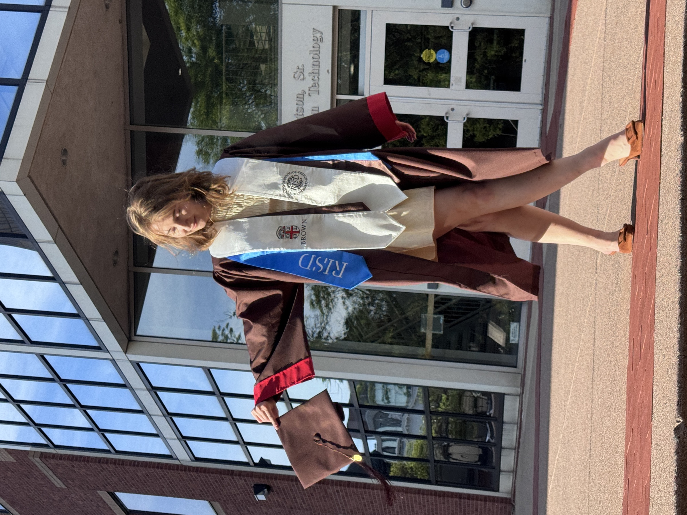

Hello! Thanks for checking out my portfolio:)
I’m a digital product designer passionate about human-centered design and accessibility. My work blends cognitive science, technical expertise, and visual design to create tools and experiences that make people feel seen and empowered. Most recently, I interned at Adobe, where I designed an AI-driven learning experience that helps users navigate Adobe's creative tools more intuitively and efficiently.
I recently graduated from the Brown|RISD dual-degree program where I studied Computer Science and Cognitive Science at Brown University and Illustration and Graphic Design at the Rhode Island School of Design. I love exploring the intersections of technology, design, and human cognition to create thoughtful and engaging experiences.
Feel free to reach out or connect with me on LinkedIn!